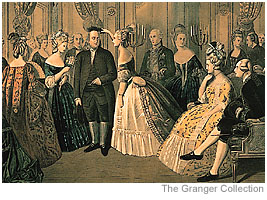

HOW TO INTEREST FOREIGN POWERS IN YOUR CAUSE
|
Thoughts from Our Leader:
Three years ago, shortly before his death in 1790, I was privileged to interview the great American ambassador, Benjamin Franklin. Franklin kindly shared the secret of his success in gaining French aid for the American cause. When Franklin came to Paris as ambassador for the newly-formed American states, the king of France was not sure he wished to support the Americans. However, Franklin gained much popularity in the sophisticated French capital by acting the part of a simple, homespun American colonial. In truth, Franklin already had spent two decades in the courts of Europe, but the French believed him the perfect example of the philosopher Jean-Jacques Rousseau's natural man, more at home in the wild forests of his homeland. Franklin tells me he did nothing to discourage this belief, and thus won much support for his country's cause. |
Benjamin Franklin as minister to France  |